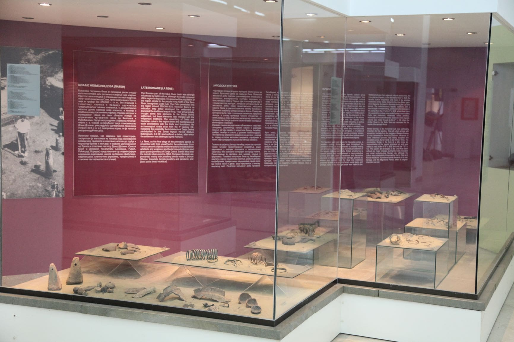

The Three-age
The Three-age System is presented with findings from the period from the end of IV millennium until the end of BC, which includes the Eneolithic (3300-2000/1800 BC), Bronze Age (2000/1800-1000/800 BC) and Iron Age (1000/800 BC – begging of AD). The Eneolithic symbolizes the beginning of the Indo-Europeanization process and the expansion of the Vucedol culture, which are represented by the findings from the site Zemunica (Radosavska), Pecine (Klasnice), and Kastel (Banja Luka). The Early and Middle Bronze Age are represented with random bronze findings: a dagger on a stick from Martin Brod on the Una River and an ax with wings from Barlovci. Intensive exploitation of copper ore is related with the newly arrived population, carriers of Urnfield culture, and founders of the fort type settlements, as evidenced by numerous findings from the Late Bronze Age: jewelry storage from Medeno Polje and Mahovljani, sword from Strazbenica fort, spear from the Rmanj Monastery. It is possible to follow development of the Iron Age in this territory, inhabited by Pannonians, thanks to archaeologically researched sites of Donja Dolina (Gradiska), Sanski Most, Petkovo brdo (Radosavska), Brdasce (Laktasi), Karanovac and Citluk (Kozarska Dubica), which belong to the culture group of Donja Dolina – Sanski Most. The Iapydes culture in Pounje is documented with jewelry and costumes’ parts findings from the site Ribic, Jezerine and Pritoka. The development of the Iron Age culture lasted until the end of the old era, without major changes during the Celts break-in, whose presence is evidenced by ceramics and jewelry findings especially in the sites of Donja Dolina and Sanski Most.
-

- 